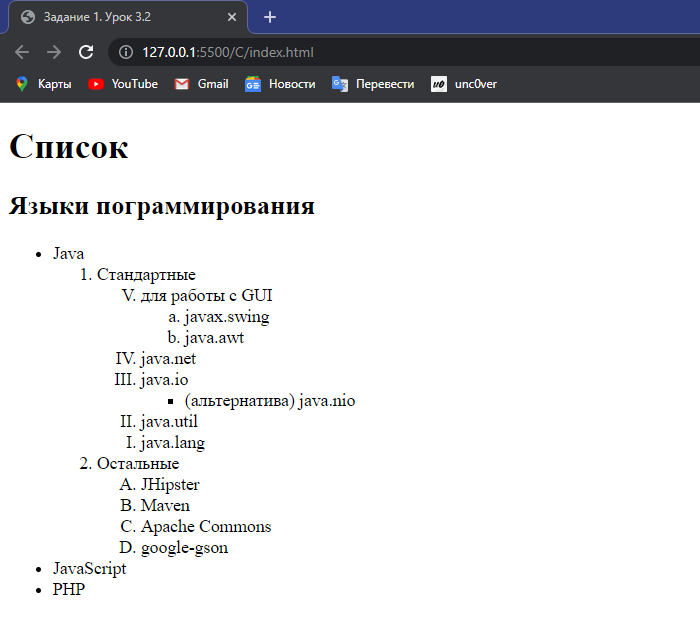
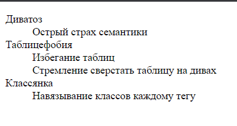
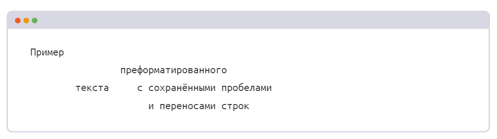
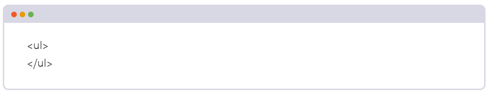
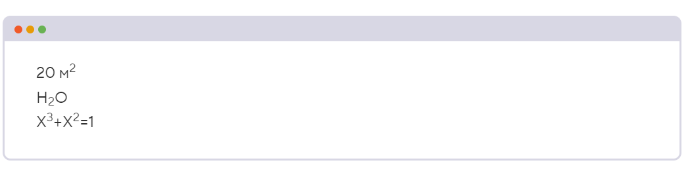

Тег ul, неупорядоченный список
Наш текущий арсенал текстовых тегов невелик (заголовки и абзацы), и они плохо подходят для разметки перечней или списков. Есть ли специальный тег для списков?
Да. В HTML тегов для разметки списков сразу несколько: для упорядоченных списков, неупорядоченных списков и списков описаний.
Неупорядоченный список размечается тегом <ul> (сокращение от «unordered list» ). Его используют, когда порядок элементов не важен. Например, для разметки перечня ссылок в меню, преимуществ товара, ингредиентов в составе продукта.
Непосредственно в теге <ul> могут находиться только теги
<li> (сокращение от «list item» ), которые
обозначают элементы или пункты списка. Пунктов может быть неограниченное количество, но должно
быть не менее одного.
Приведём пример:
<ul>
<li> Я пункт списка, могу быть на любом месте </li>
<li> И я пункт списка, и мне тоже не важен порядок </li>
</ul>
По умолчанию элементы <ul> отмечаются маркерами такого же цвета, как цвет текста.
Тег ol, упорядоченный список
За упорядоченные списки отвечает тег <ol> (сокращение от «ordered list»). Как понятно из названия, здесь действительно важно, в каком порядке идут элементы. Упорядоченные списки подходят для разметки алгоритмов, инструкций, рецептов, результатов соревнований и так далее.
Пункты упорядоченного списка тоже размечаются с помощью тега <li>.
Пример кода:
<ol>
<li> Я первый и только первый пункт </li>
<li> Я не я, если я не второй пункт </li>
<li> Третий после стольких лет?
Всегда! </li>
</ol>
По умолчанию перед элементами <ol> ставится их порядковый номер.
Атрибуты start и reversed
На то он и порядок, чтобы его нарушать. Вы решаете дополнить предыдущий пост ещё двумя списками. Но в одном из них нумерация будет идти в обратном порядке, а в другом — начинаться не с единицы. Такое возможно сделать с помощью атрибутов списка start и reversed.
По умолчанию нумерация пунктов начинается с единицы, а с помощью start можно поменять
это стартовое
число. Нумерация пунктов списка может также быть отрицательной.
Пример кода:
<ol start="3">
<li> раз </li>
<li> два </li>
</ol>
Атрибут reversed меняет направление нумерации на противоположное. Этот атрибут не требует значения.
С помощью ещё одного атрибута, type, можно задавать различные типы маркеров, вместо обычных арабских цифр: строчные и заглавные латинские буквы или римские цифры. Возможные значения этого атрибута:
- 1: десятичное число;
- a: буквы латинского алфавита в нижнем регистре;
- A: буквы латинского алфавита в верхнем регистре;
- i: римские цифры в нижнем регистре;
- I: римские цифры в верхнем регистре.
Вложенные списки
Теги <ol> и <ul> можно вкладывать друг в друга и создавать многоуровневые списки. Количество уровней в списках не ограничено.
Сначала нужно создать список первого уровня, а затем между тегами <li> и </li> этого списка добавить ещё один список. При этом необходимо аккуратно закрывать все теги:
<ol>
<li>1
<ul>
<li>1.1</li>
<li>1.2</li>
</ul>
</li>
<li>2</li>
</ol>
А вот пример ошибки, когда подсписок <ul> вложен между <li>, а не внутрь них:
<ol>
<li> 1 </li>
<ul>
<li> 1.1 </li>
<li> 1.2 </li>
</ul>
<li> 2 </li>
</ol>
Задание 1.

Написать кодом такой список, залить его в GitHub и отправить мне. Обратите внимание на все детали.
Теги dl, dt и dd, список описаний
А вот и новая запись блога про «болезни» верстальщика, которыми вы не заразитесь, если внимательно пройдёте эту часть. У каждой болезни есть описание, а у некоторых их даже несколько. Для разметки такой информации лучше всего подойдёт последний вид списков — список описаний.
Список описаний хорош для разметки вопросов-ответов, наименований и определений, категорий и тем. Он создаётся с помощью трёх тегов:
- <dl> (сокращение от «description list») обозначает сам список описаний;
- <dt> (сокращение от «description term») обозначает термин;
- <dd> (сокращение от «description definition») обозначает описание или определение.
Теги <dt> и <dd> пишутся внутри <dl>.
Каждый список <dl> может содержать один или несколько терминов и одно или несколько
описаний для каждого
термина.
Пример кода:
<dl>
<dt>HTML</dt>
<dd>Язык гипертекстовой разметки</dd>
<dt>CSS</dt>
<dd>Каскадные таблицы стилей</dd>
<dd>Язык для оформления HTML-документов</dd>
</dl>
По умолчанию браузер добавляет небольшой отступ слева от определений.
Задание 2.

Написать такую таблицу с помощью тегов, которые мы изучили выше.
Тег pre, преформатированный текст
В этой записи мы экспериментируем с ASCII-графикой и пытаемся нарисовать котика. Но ничего не получается, так как отображение кода в HTML-редакторе и в мини-браузере отличаются. Вы можете ставить сколько угодно пробелов в HTML-коде, но браузер всё равно отобразит их как один. То же самое с переносами строк — они не сохраняются при отображении в браузере.
Изменить это поведение можно с помощью тега <pre> (сокращение от «preformatted text»), который обозначает «предварительно отформатированный текст». Чаще всего этот тег используется для отображения примеров кода, реже применяется для отображения картинок ASCII Art. Браузер сохраняет и отображает все пробелы и переносы, которые есть внутри тега <pre>.
<pre>Пример
преформатированного
текста
с сохранёнными пробелами
и переносами строк</pre>
И результат отображения в браузере:

Задание 3
/\_/\ ( o.o ) = ^ =Нарисуйте такого котика.
Символы-мнемоники в HTML
В новом тексте вам захотелось перечислить теги. И чтобы они обязательно выглядели в браузере так же, как в коде. Например, так <h1> или так <p> Задачка это непростая.
Некоторые символы в HTML зарезервированы, то есть браузер считает их HTML-кодом. Например, любой текст после знака меньше (<) браузер будет пытаться интерпретировать как тег и на странице не отобразит.
Каким образом специальные символы (например больше и меньше) можно использовать в тексте страницы как обычные символы? Для этого их нужно заменить на символы-мнемоники.
Мнемоники — это особые строки, которые начинаются с амперсанда (&) и заканчиваются точкой с запятой (;). Например, знак меньше на страницу можно вставить мнемоникой < (less than), а знак больше мнемоникой > (greater than):
<ul>
</ul>
Этот код отобразится в браузере так:

Существует множество других символов-мнемоник. Например: ©, «, », §. Полный список мнемоник представлен на специальной странице.
Тег code, фрагмент кода
Теги в тексте записи стали похожи на настоящие теги. Но пока что это просто текст, обычные слова. Давайте выделим их как фрагменты кода.
Для обозначения фрагментов кода есть специальный тег, который так и называется <code>.
С его помощью размечается любой фрагмент текста, который распознается компьютером: код программы, разметки, название файла и так далее. Какого-то специального способа указать, на каком языке написан фрагмент кода, у тега <code> нет. Обычно браузеры отображают текст в теге <code> моноширинным шрифтом.
Пример разметки с <code>:
Тег <code> < ul > </code> — это неупорядоченный список.
Комбинирование тегов pre и code
Вы решили дополнить текст записи наглядным примером: многострочным фрагментом кода с хорошим форматированием. Как вы помните, сохранить форматирование помогает тег <pre>, а для разметки кода используется тег <code>. Получается, эти теги нужно скомбинировать, то есть вложить один тег в другой.
Главное — соблюдать правильный порядок вложенности. Тег <code> можно вкладывать
внутрь тега
<pre>, а наоборот делать нельзя.
Пример:
<code>
if (a > b) { // Игзампл оф коде ин
console.log('Hello!'); // ДжаваСкрипт лангуаге
}
</code>
Никакой разницы в отображении просто тега <pre> и тега <pre> с вложенным <code> в браузере не будет, но второй вариант разметки информативнее и выразительнее.
Тег q, встроенная цитата
В HTML существует несколько тегов для разметки цитат. Самый простой — тег <q> (сокращение от «quote» ). Он предназначен для выделения цитат внутри предложения. Текст внутри этого тега браузер автоматически обрамляет кавычками, поэтому добавлять кавычки вручную не нужно.
Если известен интернет-адрес цитаты, то его можно указать в атрибуте cite:
В спецификации говорится: <q cite="https://www.w3.org/TR/html52/">The q element represents some phrasing content quoted from another source</q>.
Но не путайте атрибут cite с одноимённым тегом <cite>, который тоже
относится к цитатам.
Тег
<cite> —
«расширенная версия» атрибута cite. В нём можно указывать помимо адреса источника цитаты
ещё
и
название
произведения, откуда цитируется текст, а также имя автора или организации, чей текст цитируется.
Содержимое <cite> в браузере выделяется курсивом.
Когда теги <q> и <cite> используют вместе, их ставят рядом
друг
с
другом:
<p> По словам <cite>Чарльза Буковски</cite> — <q>Интеллектуал о простой вещи
говорит
сложно — художник
сложную
вещь описывает простыми словами.</q></p>
Тег <cite> может быть самостоятельным и не привязываться к цитате:
<p>Какой доктор ваш любимый (в сериале <cite>Доктор Кто</cite>)?</p>
Тег blockquote, отдельная цитата
Для выделения длинных цитат, которые могут состоять из нескольких абзацев, предназначен тег <blockquote>. Он выделяет цитату не как фрагмент текста в предложении, а как отдельный блок текста с отступами.
Так же, как и у <q>, у <blockquote> может быть атрибут cite, содержащий ссылку на источник цитаты. И также в паре с <blockquote> можно использовать тег <cite>, который обычно размещается внутри цитаты. Пример:
<blockquote>
<p>Ум ценится дорого, когда дешевеет сила.</p>
<cite>Джейсон Стэтхэм</cite>
</blockquote>
В браузере тегу <blockquote> обычно добавляются горизонтальные отступы.
Тег br, перенос строки
Мы уже знаем много тегов, может какие-то из них подойдут для разбиения текста на строки?
Нужен специальный тег, который просто добавляет перенос строки внутри абзаца. Для этого в
HTML предусмотрен
одиночный тег <br> (сокращение от «line break»).
Этот тег
отлично
подходит, если переносы нужны в тексте для повышения его читабельности, например, в почтовых адресах,
стихах, текстах песен, режиме работы.
Иногда этот тег применяют неправильно, для разбиения текста на
«как бы абзацы». Никогда так не делайте. Для разметки абзацев нужно использовать тег
<p>.
Теги sub и sup, нижний и верхний индексы
Вам доверили поработать с методическим материалом, в котором описываются формулы. Всё почти завершено, осталось только расставить верхние и нижние индексы. Для них тоже есть специальные теги.
Тег <sup> (сокращение от «superscript») отображает текст в виде
верхнего индекса,
а тег <sub>
(сокращение от «subscript») в виде нижнего индекса.
Эти теги чаще используются для выделения отдельных символов, а не слов. Их используют для
указания единиц измерения или написания простых формул.
Например:
20м<sup>2</sup>
H<sub>2</sub>O
X<sup>3</sup>+X<sup>2</sup>=1
В браузере это будет выглядеть так:

Для зануд =) Для создания более сложных формул, например, ex2 или уxn+1, теги <sup> и <sub> можно использовать внутри друг друга. Если вам нужно вставить очень сложную формулу в HTML-документ, лучше воспользоваться специальным языком разметки MathML.
Тег time, дата и время
В новой записи вы решили уточнить точное время дня (а точнее ночи), когда именно была сделана запись. Строку со временем можно оставить просто текстом, но есть вариант получше. В HTML есть специальный тег для разметки даты и времени. Это тег <time>.
С помощью <time> можно описывать даты одновременно и для человека, и для машины. Дата для человека описывается внутри тега, а дата для машины — внутри атрибута datetime в формате ISO 8601:
<time datetime="2016-11-18T09:54">09:54 утра</time>
<time datetime="2015-11-18">18 ноября 2015</time>
<time datetime="2018-09-23">в прошлую субботу</time>
<time datetime="2017-04-20">вчера</time>
Браузер отображает только содержимое тега, а содержимое datetime не отображается. Человек увидит только понятное ему обозначение времени, а машина прочитает атрибут и получит дату в нужном ей формате. И все останутся довольны.
Теги em и i, акцентирование внимания
Время идёт, ваш дневник пополняется. Со временем вы замечаете, что хотите выделить некоторые фрагменты текста ваших записей. И не просто выделить, а сделать на них особый акцент.
Следующие два тега предназначены для акцентирования внимания на слово или фразу. Это теги <em> (сокращение от «emphasis») и <i> (сокращение от «italic»).
Визуально оба тега одинаковы, они выделяют текст курсивом. Но значение у этих тегов различное.
Тег <em> определяет текст, на который сделан особый акцент, меняющий смысл
предложения.
Например, если автор текста любит лето и недолюбливает зимнее время, то его речь можно разметить
следующим образом:
Я <em>просто обожаю</em> холодные зимние дни!
Тег<i> применяется для обозначения текста, который отличается от окружающего текста, но не является более важным. Например, в <i> можно заключать названия, термины, иностранные слова. Также в этот тег можно обернуть мысли героя. В речи такой текст обычно выделяется интонационно. Приведём пример:
Он взглянул в окно и подумал — <i>такого просто не может быть </i>!
Теги strong и b, важность и выделение
На этом возможности выделения слов и фраз в тексте не заканчиваются. Вы научились выделять фразы курсивом, а теперь давайте разберёмся с выделением текста жирным.
Теги <strong> и <b> (сокращение от «bold») предназначены для выделения слова или фразы. Отображаются оба тега одинаково, они выделяют текст жирным.
Тег <strong> указывает на важность отмеченного текста. Он может использоваться для выделения предупреждений или части документа, которую пользователь должен увидеть раньше остального. При этом обозначение части текста тегом <strong> не должно изменять смысла предложения.
<strong>Внимание</strong> Это место опасно. <strong>Вы можете упасть в пропасть</strong>, если подойдёте близко к краю.
Тег <b> предназначен для выделения текста с целью привлечения к нему внимания, но без придания ему особой важности. Использовать его нужно только в случае, когда остальные теги выделения не подходят. Типичный пример — выделение вводного предложения статьи.
Вы входите в небольшую комнату. Ваш <b>меч</b> загорается ярче. <b>Крыса</b> стремительно пробегает вдоль стены.
Лучше всего отличия этих тегов будут заметны людям, которые используют средства доступности, в частности, слепым и слабовидящим. Скринридер при чтении сайта будет выделять слова с тегом <strong> интонационно, в отличие от простого выделения с помощью <b>. То же самое касается тегов <em> и <i>. Тег <em> «читалка» будет выделять интонацией.
Теги del и ins, выделение изменений
Списки дел на то и нужны, чтобы вычёркивать выполненные дела и иногда добавлять новые. У вас также назрела необходимость обновить список дел, но так, чтобы было видно, какие дела завершены, а какие добавлены. Как сделать разметку такой истории изменений?
Как раз для описания изменений предназначены теги <del> (сокращение от «delete») и <ins> (сокращение от «insert»).
Тег <del> выделяет текст, который был удалён в новой версии документа. В браузере этот текст перечёркивается.
Тег <ins>выделяет текст, который был добавлен в новой версии документа. В браузере этот текст подчёркивается.
Оба тега имеют атрибут datetime, в котором можно указать дату и время, когда была внесена та или иная правка.
Простейшим примером применения этих тегов может служить список дел. Когда дело выполнено, его помечают тегом , а если <del> появилось новое дело, то его добавляют в список и помечают тегом <ins>.
<ul>
<li>Почистить посудомоечную машину</li>
<li><del
datetime="2009-10-11T01:25-07:00">Погулять</del></li>
<li><del
datetime="2009-10-10T23:38-07:00">Поспать</del></li>
<li><ins>Купить принтер</ins></li>
</ul>
Для зануд =) Атрибут datetime предназначен не для людей, а для компьютеров, поэтому дату и время там пишут в стандартизованном формате. При такой разметке программам легче разбирать документы и анализировать, когда произошли те или иные изменения.
Теги div и span, контейнеры для стилизации
Вы уже узнали так много новых тегов и у каждого из них есть свой смысл. Но иногда хочется просто красиво, без придания какого-то смысла, выделить короткий фрагмент текста или несколько абзацев. Например, подсветить самые опасные на ваш взгляд болезни верстальщика красноватым фоном.
Но раз такое выделение «бессмысленно», то и делать его «смысловыми» тегами нельзя? Да, это так.
Но есть два специальных тега у которых «смысла» нет. Это теги <div> (сокращение от «division») и <span>. Это «чистые» элементы, которые отлично подходят для визуальной группировки других элементов. Использовать эти теги рекомендуется, если более подходящих семантических тегов не нашлось.
Теги <div> и <span> не имеют никакого оформления по умолчанию и их почти всегда используют вместе с атрибутом class, чтобы легко добавлять им собственные стили.
Тег <div> обычно используется для группировки крупных элементов, например, нескольких абзацев, или в качестве контейнера для создания сеток страниц.
А <span> используется для выделения мелких текстовых элементов: частей слов, отдельных слов или фраз, состоящих из нескольких слов:
<article>
<div class="highlight">
<p>Мы два красивых выделенных абзаца.</p>
<p>С жёлтеньким фоном!</p>
</div>
<p>Текст, в котором <span>выделена фраза</span>.</p>
</article>
В этом задании мы используем <div> в качестве обёртки для пунктов списка определений. В таком случае в теге <dl> не должно находиться не обёрнутых в <div> пунктов списка. Мы либо оборачиваем все элементы, либо оставляем все теги <dt> и <dd> без обёрток. Смешение обёрнутых и не обёрнутых в <div> определений внутри одного списка считается ошибкой.